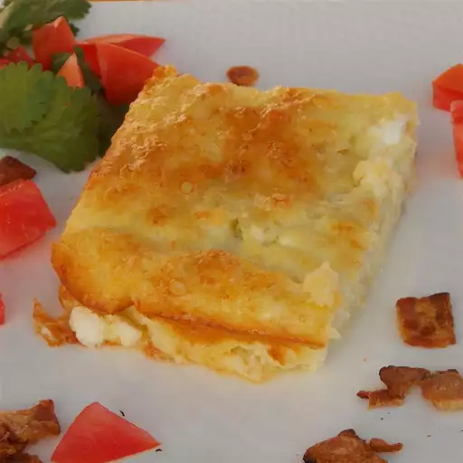

Ingredients
- 500 g cottage cheese
- 2 eggs
- 3 tbsp semolina
- 5 dried apricots
Instructions
- Mix cottage cheese, eggs, chopped dried apricots and semolina.
- Pour the mixture into a baking dish.
- Place the baking dish in an unheated oven.
- Set the temperature to 180°C for baking.
- Bake for 35-40 minutes until lightly golden.
- Let cool slightly before serving.